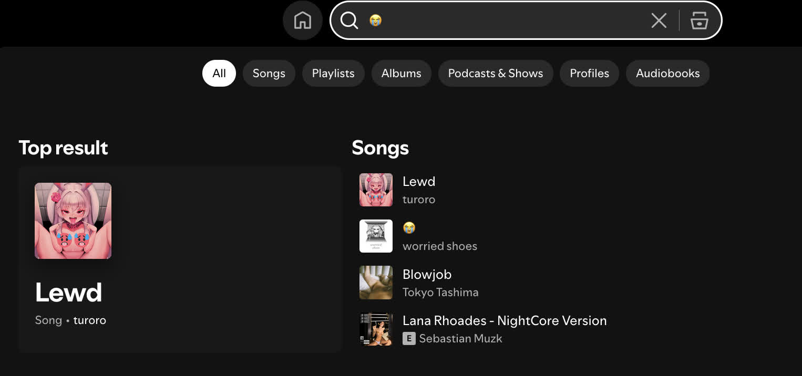
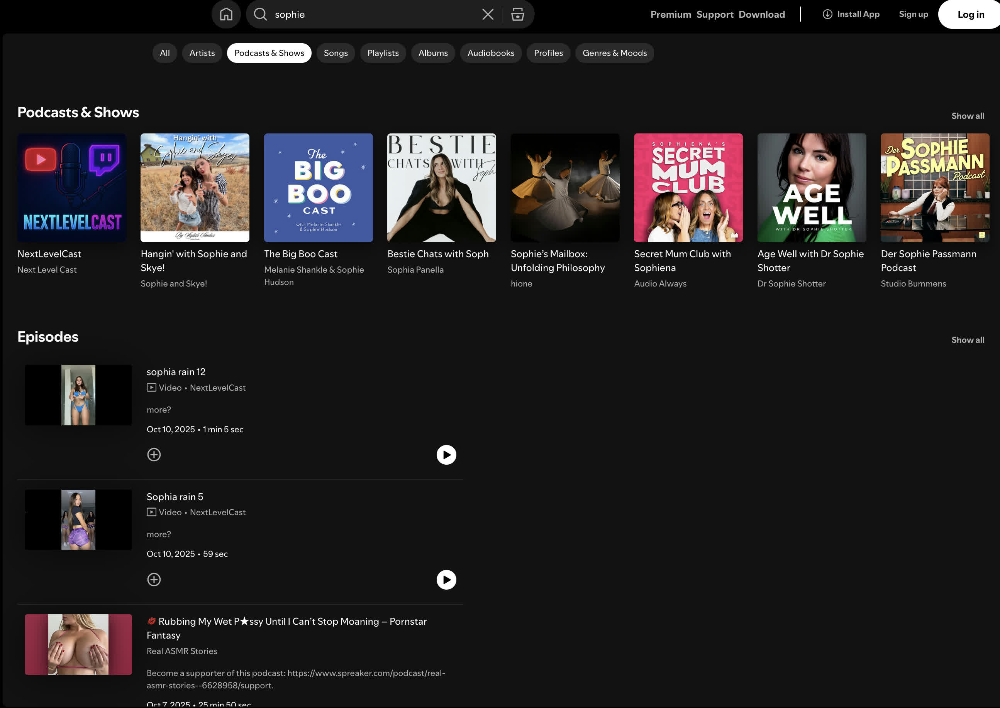

Yes, not even explicit content. NSFW!
These two stories below concretize my thoughts about the situation of NSFW content on Spotify: it is currently a thing, and it can get worse if we do not take proper actions.
It was a random moment a year or two ago when I tried to search for playlists with the sobbing/loud crying emoji (😭). And for some reason, I got results with album covers containing women revealing most of their bodies (i.e., chest, butts, etc.) or having highly sexual poses. I am fine with those images as long as they are proper songs by known artists. But no.
Not so long ago, I randomly typed something like "sophie," and all of a sudden, I got results with the word Sophie Rain, that hot Internet figure selling adult photos and videos, or may I say, a pornstar. Besides podcast episodes criticizing her, I saw a load of literal porn videos deep down below. And I even found videos coming from... OnlyFans! (sadly they were removed so I could not include here.)
Let's take a moment to discuss the current state of Spotify podcasts. I would say podcasts on Spotify are already a pure mess, compared to other dedicated podcast platforms, including Apple Podcasts and Overcast, as everyone (a.k.a. normal Spotify users) can upload a podcast episode on Spotify. Recently, Spotify added video support for podcasts, plus the comment section. Spotify is no longer a pure music platform; it is halfway becoming a new YouTube right now with videos everywhere. Sadly, it did not expect that people would upload the worst video possible on Spotify and somehow not be removed. Again, everyone can upload a podcast episode on Spotify, and because of that, it can be about anything. Music reuploads, videos on YouTube, or... even porn videos straight outta OnlyFans! While Spotify is taking fast action to remove wrongly-uploaded copyrighted music, it is not doing a good job of having the same serious moderation for podcasts. The worst thing is there is ZERO way to report a podcast from the normal UI! That means in 99% of normal Spotify usage, you are not able to report any of them. This is a concerning situation.
Apparently, NSFW content is not a new thing or only exists during the rise of video podcasts. As mentioned in the first story, I encountered multiple songs and playlists with either NSFW names or photos of women overly revealing themselves. But for some reason, and I could not stand it, why would people post such things in the first place? This is a music platform, not an adult website.
Thankfully, I included a quick guide on how to report podcasts on Spotify below. It works for both shows (a.k.a. the whole podcast user/collection) and episodes.
Disclaimer: The actual URI of the example podcast show and episode are censored to prevent incorrect mass report.
spotify:show:<URI_code>), choose one of the following 3 options:spotify:episode:<URI_code>), choose one of the following 5 options: